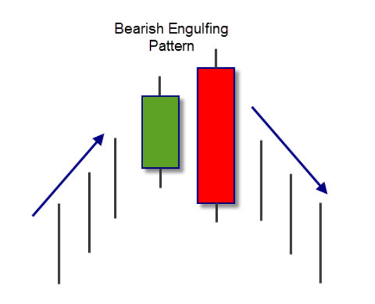
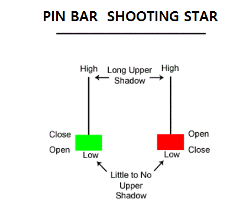
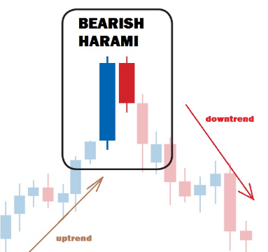
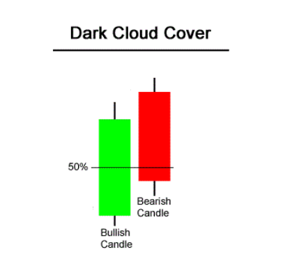
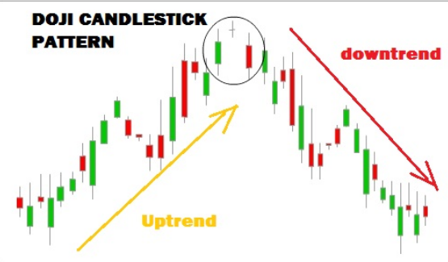
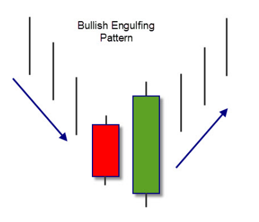

아래 6가지 캔들패턴이 Forex trading에서 가장 적중도가 높았던 패턴임
이 여섯가지만 잘 찾아도 매매성공확률이 매우 높아짐
캔들패턴을 매매에 사용할 때는 반드시 두가지 조건을 만족시킬때만 사용해야 함
첫째는 반드시 주가의 기울기가 있고 추세가 어느 정도 진행된 후에 나타나는 패턴만 유효하다는 것
둘째는 중요한 지지(저항) 포인트 피봇이나 의미있는 추세선/ 전고점/ 전저점에서 나타나야 믿을 수 있음
횡보장에서 무수히 나타나는 캔들패턴은 무시해야 함
1

2

3

4

5

6
